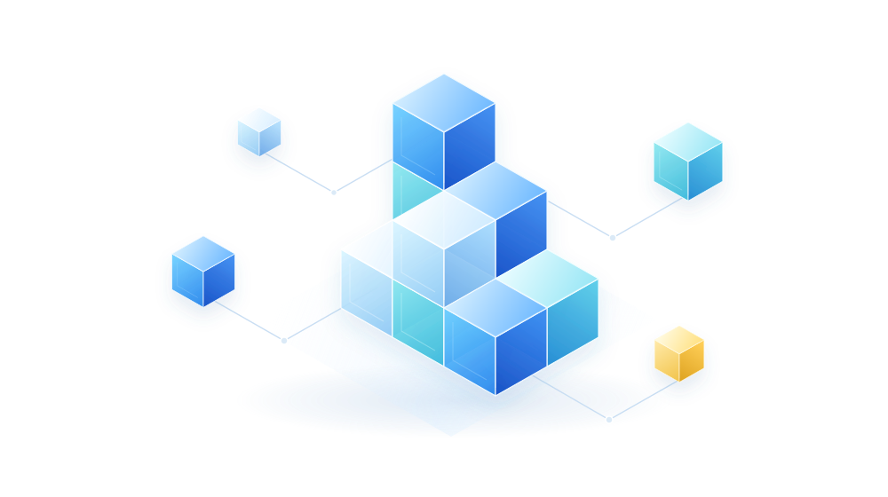

일하는 방식을 바꾸는
기업 AI 교육
직무별 시나리오로 ChatGPT부터
AI 에이전트·LLM 고급 활용까지.
- ChatGPT 기초 & 직무별 활용
- AI 에이전트 & LLM 고급 활용
- 중소기업 맞춤 교육
다양한 조직의 업무 현장과 함께합니다
업무에 맞춘 AI 교육
도구에 대한 이해에서 실제 업무 적용까지.
직무별 실습으로 우리 조직의 과제를 해결하는 힘을 기릅니다.

우리 업무에 맞춘 AI 활용 역량


교육 대상과 업무 환경에 맞춰
필요한 주제와 실습 과정을 설계합니다.
직무별 시나리오로 ChatGPT부터
AI 에이전트·LLM 고급 활용까지.
공문서 자동화부터 AI 리터러시까지.
보안과 현장을 고려한 실무 교육.
제조데이터를 이해하고
현장의 실제 문제에 AI를 적용합니다.
챗GPT 기본 교육으로 생성형 AI의 개념과 사용법을 학습하고, 마스터 과정으로 직무별 업무 활용을 심화합니다.
AI 에이전트의 업무 처리 흐름을 실습하고, LLM 고급화 교육으로 조직별 AI 활용 역량을 강화합니다.
조직 규모와 구성원 수준을 고려해 교육을 설계하고, 실제 업무 시나리오로 현업 중심 실습을 진행합니다.
분야별 전문 강사진
 Big Data Analysis
Big Data Analysis Business Data Analysis
Business Data Analysis Machine Learning Analysis
Machine Learning Analysis단계별 AI 교육 체계
역량 단계와 직무에 맞춰 교육 과정을 연결합니다.
AI의 기본 개념과 사용법을 익히고, 간단한 업무 실습으로 활용의 기초를 다집니다. AI를 처음 접하는 구성원도 업무 환경에 맞는 입문 과정부터 시작할 수 있습니다.
문서 작성부터 데이터 분석, 업무자동화까지. 직무와 업종에 맞는 실제 업무 시나리오로 실습합니다.
AI 에이전트·LLM 고급 활용부터 전문 콘텐츠 제작까지. 전문 직무에 맞는 심화 과정을 선택합니다.
경영진의 AI 전략부터 조직의 도입 방향까지. AX 전환을 다루는 임원·기획 과정을 운영합니다.
AI 교육 사례
현대제철
직무의 과제를 AI 실습으로 연결합니다.
01 / 04
채널A
콘텐츠 제작에 생성형 AI를 활용합니다.
02 / 04
코이카
구성원의 수준에 맞춰 교육을 설계합니다.
03 / 04
서울주택도시개발공사
실제 업무의 아이디어를 함께 구체화합니다.
04 / 04
AI 해커톤 운영
문제·주제 설계부터 평가와 결과 확산까지.
기관의 실제 과제를 바탕으로
대회 주제를 설계합니다.
참가자를 모집하고
일정과 참여 방법을 안내합니다.
설계한 목표와 주제에 맞춰
대회 운영을 지원합니다.
평가 기준에 따라 심사하고
우수 팀을 시상합니다.
대회 결과와 우수 사례로
보고서·사례집을 제작합니다.
자주 묻는 질문
먼저 조직의 AI 활용 수준을 진단하고, 업종과 직무에 맞춰 과정을 설계합니다. 실습 70% 비중으로 교육하고, 교육 뒤에는 현업에 정착하도록 지원합니다.
과정은 AI 리터러시부터 직무별 AI 활용 교육, AI 에이전트·LLM 심화까지 네 수준으로 나뉩니다.